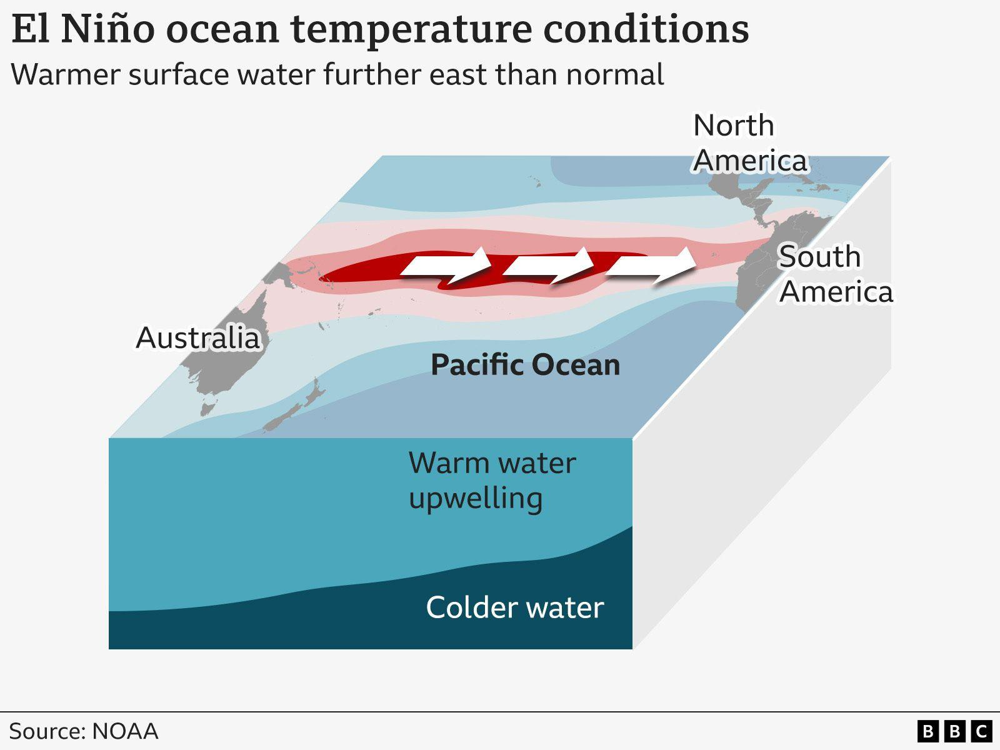

A practitioner deciding in December wants to see who is already inside. So the panel is published as it fills, from the first acceptance.
When you are accepted you take a seat on the panel that selects the practitioners who come after you. You read the applications. You sit in the curation. You help decide what the cohort becomes. By January, every program in camp has been considered, questioned and chosen by everyone else in camp.
Which means this page is not a roster. This page is the room, filling up, in the order people arrive.
On being listed. A listing goes up only with your explicit consent, and declining changes nothing about your seat. No photograph appears until you supply one. The unit is a name, a one-line project, and a city — enough for a stranger to feel the cohort forming, and nothing more than that.
4:5 · pending
Kamau Zuberi Akabueze
Founder of THE ÅLïEN SCõÖL, a school for creative thinking. Built Creative Steeping, a journaling method for sitting with an idea long enough to hear what it wants, and a•i•Contemplation, a practice for moving an idea from thinking into action. Leads the Neuroarts Fund for Innerversal Health Practitioners.
Taught Creative Steeping as a nine-week course at Mars College in 2026, living in camp with his students the whole season while studying music theory, live coding, pottery and drawing.

on record
El Niño
Named by fishermen off Peru for the child who arrives at Christmas. Returns every two to seven years on no schedule anyone can hold. Currently forecast by NOAA at greater than ninety percent likelihood of becoming very strong through the 2026–27 winter, which places the peak inside our season.
Engaged like every other panelist, because the house rule does not make exceptions for weather.
portrait
Your name here
The third seat goes to whoever applies next and is chosen. Apply early and you help choose seats four through twelve.
unexposed
Nine more
Every seat after the third is filled by a panel that includes everyone before it. That is the whole mechanism, and it is why applying early is worth more than a place.
Take the third seat.
Applications are read by the standing panel, meaning the practitioners already listed above. Rolling admissions, small cohort, and the panel fills in the order people arrive.
Apply for a spot Back to the camp